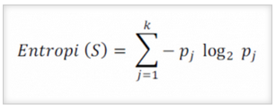
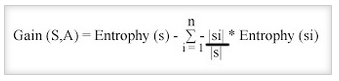
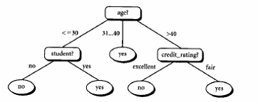
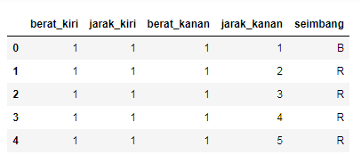
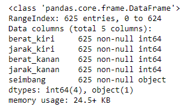
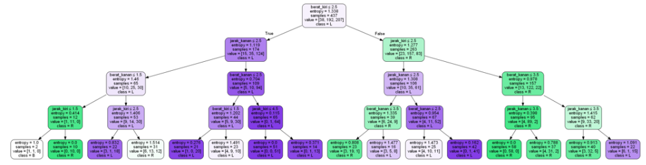

Decision Tree
Pendahuluan
Pengertian Decision Tree
Pohon keputusan adalah salah satu metode klasifikasi yang paling populer karena mudah untuk diinterpretasi oleh manusia. Pohon keputusan adalah model prediksi menggunakan struktur pohon atau struktur berhirarki. Konsep dari pohon keputusan adalah mengubah data menjadi pohon keputusan dan aturan-aturan keputusan. Manfaat utama dari penggunaan pohon keputusan adalah kemampuannya untuk mem-break down proses pengambilan keputusan yang kompleks menjadi lebih simpel sehingga pengambil keputusan akan lebih menginterpretasikan solusi dari permasalahan.
Pohon Keputusan juga berguna untuk mengeksplorasi data, menemukan hubungan tersembunyi antara sejumlah calon variabel input dengan sebuah variabel target. Pohon keputusan memadukan antara eksplorasi data dan pemodelan, sehingga sangat bagus sebagai langkah awal dalam proses pemodelan bahkan ketika dijadikan sebagai model akhir dari beberapa teknik lain. Sering terjadi tawar menawar antara keakuratan model dengan transparansi model. Dalam beberapa aplikasi, akurasi dari sebuah klasifikasi atau prediksi adalah satu-satunya hal yang ditonjolkan, misalnya sebuah perusahaan direct mail membuat sebuah model yang akurat untuk memprediksi anggota mana yang berpotensi untuk merespon permintaan, tanpa memperhatikan bagaimana atau mengapa model tersebut bekerja.
Struktur Decision Tree
Decision tree dibentuk dari 3 tipe dari simpul: simpul root, simpul perantara, dan simpul leaf.
- Simpul leaf memuat suatu keputusan akhir atau kelas target untuk suatu pohon keputusan.
- Simpul root adalah tiitk awal dari suatu decision tree.
- Setiap simpul perantara berhubungan dengan suatu pertanyaan atau pengujian.
Algoritma
- Pohon dibangun dalam suatu metoda rekursif topdown divide and-conquer.
- Seluruh contoh pelatihan dimulai dari simpul root, lalu dilakukan penujian.
- Mencabang ke jalur yang benar berdasarkan hasil pengujian.
- Apakah simpul leaf ditemukan? Jika true, masukkan ke kelas target, jika false kembali ke langkah awal.
- Atribut-atribut berada dalam suatu kategori (jika bernilai kontinu, nilai-nilai tersebut didistribusikan terlebih dahulu).
- Contoh-contoh dipartisi secara rekursif berdasarkan atribut terpilih.
- Atribut-atribut uji dipilih berdasarakn heuristik atau pengukurann statistik (misal, information gain).
Rumus
Menghitung *Entrophy*

S : Himpunan kasus
k : Jumlah partisi S
Pj : Probabilitas yang didapat dari jumlah (Ya/Tidak) dibagi total kasus
Menghitung *Gain*

S : Himpunan kasus
A : Atribut
n : jumlah partisi atribut A
|Si| : jumlah kasus pada partisi ke-i
|S| : jumlah kasus dalam S
Contoh Kasus

Disini setiap percabangan menyatakan kondisi yang harus dipenuhi dan tiap ujung pohon menyatakan kelas data. Contoh di Gambar 1 adalah identifikasi pembeli komputer,dari pohon keputusan tersebut diketahui bahwa salah satu kelompok yang potensial membeli komputer adalah orang yang berusia di bawah 30 tahun dan juga pelajar. Setelah sebuah pohon keputusan dibangun maka dapat digunakan untuk mengklasifikasikan record yang belum ada kelasnya. Dimulai dari node root, menggunakan tes terhadap atribut dari record yang belum ada kelasnya tersebut lalu mengikuti cabang yang sesuai dengan hasil dari tes tersebut, yang akan membawa kepada internal node (node yang memiliki satu cabang masuk dan dua atau lebih cabang yang keluar), dengan cara harus melakukan tes lagi terhadap atribut atau node daun. Record yang kelasnya tidak diketahui kemudian diberikan kelas yang sesuai dengan kelas yang ada pada node daun. Pada pohon keputusan setiap simpul daun menandai label kelas. Proses dalam pohon keputusan yaitu mengubah bentuk data (tabel) menjadi model pohon (tree) kemudian mengubah model pohon tersebut menjadi aturan (rule).
Kelebihan
-
Daerah pengambilan keputusan yang sebelumnya kompleks dan sangat global, dapat diubah menjadi lebih simpel dan spesifik.
-
Eliminasi perhitungan-perhitungan yang tidak diperlukan, karena ketika menggunakan metode decision tree maka sample diuji hanya berdasarkan kriteria atau kelas tertentu.
-
Fleksibel untuk memilih fitur dari internal node yang berbeda, fitur yang terpilih akan membedakan suatu kriteria dibandingkan kriteria yang lain dalam node yang sama. Kefleksibelan metode decision tree ini meningkatkan kualitas keputusan yang dihasilkan jika dibandingkan ketika menggunakan metode penghitungan satu tahap yang lebih konvensional.
-
Dalam analisis multivariat, dengan kriteria dan kelas yang jumlahnya sangat banyak, seorang penguji biasanya perlu untuk mengestimasikan baik itu distribusi dimensi tinggi ataupun parameter tertentu dari distribusi kelas tersebut. Metode decision tree dapat menghindari munculnya permasalahan ini dengan menggunakan criteria yang jumlahnya lebih sedikit pada setiap node internal tanpa banyak mengurangi kualitas keputusan yang dihasilkan.
Kekurangan
-
Terjadi overlap terutama ketika kelas-kelas dan criteria yang digunakan jumlahnya sangat banyak. Hal tersebut juga dapat menyebabkan meningkatnya waktu pengambilan keputusan dan jumlah memori yang diperlukan.
-
Pengakumulasian jumlah eror dari setiap tingkat dalam sebuah decision tree yang besar.
-
Kesulitan dalam mendesain decision tree yang optimal.
-
Hasil kualitas keputusan yang didapatkan dari metode decision tree sangat tergantung pada bagaimana pohon tersebut didesain.
Implementasi (Studi Kasus)
Alat & Bahan
Sebelum menerapkan konsep decision tree pada studi kasus yang telah ditentukan, beberapa tools yang perlu dipersiapkan agar program yang kita rancang bisa dieksekusi dengan baik diantaranya:
- python 3.x (versi 3 keatas).
- Anaconda Navigator atau Pycharm.
Untuk mempermudah kawan-kawan mendapatkan toolsnya, sillakan kawan-kawan bisa download tools-nya disini.
Studi kasus pada Balance Scales adalah mengklasifikasikan beberapa poin perolehan suatu percobaan dengan 3 klasifikasi objek. Untuk contoh penulisan program dan datanya bisa mengambil kawan-kawan download disini.
Berikut source code dan penjelasan untuk menyelesaikan study kasus tersebut dengan konsep Decision Tree Clasification.
Langkah-langkah:
Pertama
Import beberapa library dari python seperti:
-
pandas => memuat sebuah file ke dalam tabel virtual ala spreadsheet yang memiliki struktur data yang diperukan untuk membersihkan data mentah ke dalam sebuah bentuk yang cocok untuk dianalisis.
-
numpy => untuk operasi vektor dan matriks. Fiturnya hampir sama dengan MATLAB dalam mengelola array dan array multidimensi.
-
sklearn => untuk mengimportkan library data science. Berbagai fungsi didalamnya seperti fungsi agregasi, hitung metriks, hitung akurasi, display gambar, dan lain sebagainya.
-
seaborn => library untuk membuat grafik statistik.
-
pydotplus => library untuk memvisualisasikan bentuk hirarki.
#import library
import pandas as pd
from sklearn.tree import DecisionTreeClassifier
from sklearn.model_selection import train_test_split
from sklearn import metrics
from sklearn.metrics import accuracy_score
import seaborn as sns
from sklearn.tree import export_graphviz
from sklearn.externals.six import StringIO
from IPython.display import Image
from sklearn.tree import export_graphviz
import pydotplus
import numpy as np
Kedua
Mengimport data dari komputer dengan perintah pandas.
#read data
data = pd.read_csv('balance_scale.csv') #Pastikan file data set berada dalam folder yang sama dengan file jupyter notebook
Ketiga
Menampilkan data.
#explore data
data.head()

Keempat
Melihat info kolom dari data.
data.info()

Kelima
Memilih kolom uji untuk dihitung hasilnya.
zero_not_accepted = ['berat_kiri','jarak_kiri','berat_kanan','jarak_kanan']
# for col in zero_not_accepted:
# for i in data[col]:
# if i==0:
# colSum = sum(data[col])
# meanCol=colSum/len(data[col])
# data[col]=meanCol
for col in zero_not_accepted:
data[col]= data[col].replace(0,np.NaN)
mean = int(data[col].mean(skipna=True))
data[col] = data[col].replace(np.NaN,mean)
Keenam
Membagi data train dan data test dengan data test 30%.
X = data.iloc[:,0:3] #memilih objek data X dengan array
y = data.iloc[:,3] #memilih objek data y dengan array
#build model & train data
X = data[['berat_kiri','jarak_kiri','berat_kanan','jarak_kanan']] #objek uji
y = data['seimbang'] #objek kelas
#split data
X_train, X_test, y_train, y_test = train_test_split(X, y, test_size = 0.3, random_state=0)
Ketujuh
Menentukan entropy data.
clf = DecisionTreeClassifier(criterion="entropy", max_depth=4) #entropy dengan 4 cabang
clf = clf.fit(X_train,y_train)
y_pred = clf.predict(X_test)
Kedelapan
Meenentukan simpul root, simpul perantara, dan simpul leaf dari data yang telah diketahui nilai entropy-nya.
feature_cols = ['berat_kiri','jarak_kiri','berat_kanan','jarak_kanan'] #kolom yang diuji
#mengelompokkan data ke dalam kelas
dot_data = StringIO()
export_graphviz(clf, out_file=dot_data, filled=True, rounded=True, special_characters=True,feature_names = feature_cols,class_names=['B','R','L'])
#visualisai pohon keputusan
graph = pydotplus.graph_from_dot_data(dot_data.getvalue())
#menyimpan hasil visualisasi
graph.write_png('keseimbangan.png')
Image(graph.create_png())

Referensi
-
Discovering Knowledge in Data (Introduction to Data Mining), Chapter 6, Daniel T. Larose, Wiley, 2004.
-
Marwana. Algoritma C4.5 Untuk Simulasi Prediksi Kemenangan Dalam Pertandingan Sepakbola. Jurnal Informatika Multimedia, STIMED NUSA PALAPA.
-
http://tessy.lecturer.pens.ac.id/kuliah/db2/klasifikasi.pdf.